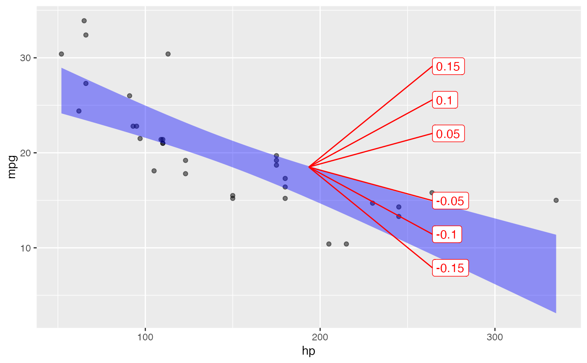
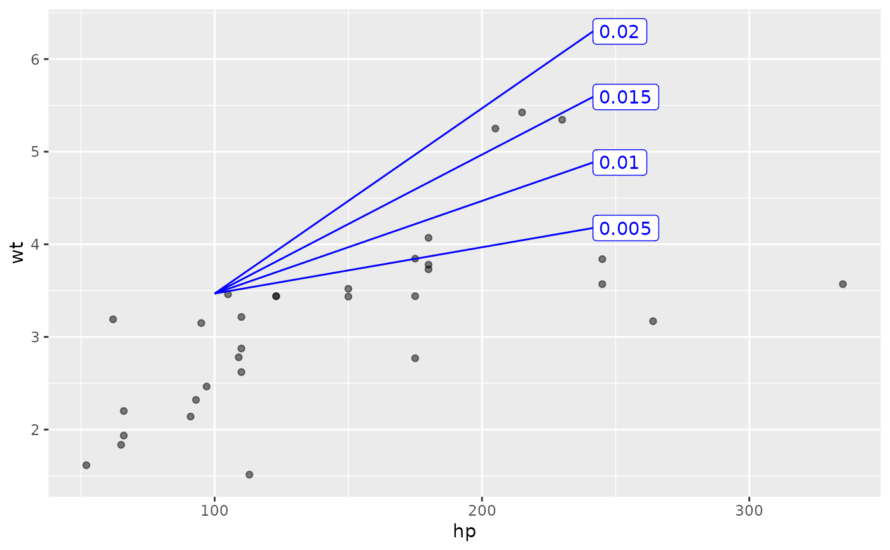

To guide a reader in quantifying the slope of components of an x-y graph, a "slope rose" is helpful. Several radiating lines are drawn, each marked with a numerical slope. A suitable choice of slopes is made automatically, based on the x- and y- scale of the plot.
Arguments
- P
a ggplot2 object made by the ggplot2 or ggformula packages
- x
the x-position of the rose. This will be assigned automatically if
xisn't specified.- y
the y-position of the rose, just like
x.- scale
the size of the rose as a fraction of the plot area covered (default 1/4)
- color
text string (e.g.
"blue") for the rose- keepers
whether to show
"both"positive and negative slopes or just show the"pos"or the"neg"- width
for rulers, the distance between tick marks (in native units, where categories are separated by a distance of 1.)
- ticks
Integers, typically
0:5, that label the ticks.- ...
additional graphical parameters, e.g.
color = "blue"
Details
For the ruler, x gives the position of the root of the ruler, with the rest of the ruler moving off to the left. (For vertically oriented rulers, use a negative width.)
Note
Use the pipe operator to send a previously made plot to have a rose added. Don't use the {ggplot2}
+ connector.
Examples
mtcars |> point_plot(mpg ~ hp, annot="model") |> add_slope_rose()

mtcars |> point_plot(wt ~ hp) |> add_slope_rose(keepers="pos", color="blue", x=100, scale=.5 )
